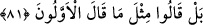

80. Ve O, yaşatan ve öldürendir; gecenin ve gündüzün değişmesi O’nun eseridir.
Hâla aklınızı kullanmaz mısınız!
“Ve O,” hiçbir şey bu konuda kendisine ortak olmaksızın “yaşatan ve öldürendir”
yâni, kıyamette nutfelere, toprağa, yumurtaya ve ölülere hayat verir. Dirilerden de hayatı
alır.
Önceki âyetlerde “
(yarattı ve türetti)” buyrulduğu gibi burada “
(hayat
verdi ve öldürdü)” buyrulmamıştır. Geniş zaman (muzari) lafzıyla gelmesi, yaşatma ve
öldürmenin Allah’ın âdeti olduğuna delâlet etmesi içindir.
“Gecenin ve gündüzün değişmesi” sadece “O’nun eseridir.” Yâni onların birbirini
tâkip etmesinde ya da artıp eksilmesinde müessir olan güneş değil O’dur.
“Hâlâ aklınızı kullanmaz mısınız!” yâni siz bu âyetlerden gaflet içinde misiniz?
Onlardan haberdar değilsiniz de bunların hepsinin bizden olduğunu, kudretimizin bütün
mümkin varlıkları içine aldığını ve yeniden diriltmenin de buna dâhil olduğunu düşünüp
mülâhaza ederek aklınızı kullanmaz mısınız?
81. Buna rağmen onlar, öncekilerin dedikleri gibi dediler.
“Buna rağmen” akıllarını kullanmadılar “onlar,” yâni Mekke kâfirleri “öncekilerin
dedikleri gibi dediler.” Yâni kendilerinden önceki kâfirlerin dediği gibi dediler. Sonra
onların söylediği bu müphem söz şöyle tefsir edilmiştir:
82. Dediler ki: “Sahi biz, ölüp de bir toprak ve kemik yığını haline gelmişken,
mutlaka yeniden diriltileceğiz öyle mi?
“Dediler ki: “Sahi biz, ölüp de bir toprak ve kemik yığını haline gelmişken, mutlaka
yeniden diriltileceğiz öyle mi?” Acaba kabirden çıkarılır mıyız?
Bu söz istifhâm-ı inkârîdir (inkâr yoluyla sorulan bir sorudur), yani toprak
olduğumuzda haşr ve diriltme nasıl olacak? (olmaz). Bunu imkansız gördüler. Bundan
önce de toprak olduklarını ve yaratıldıklarını hiç düşünmediler.